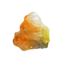

üß≠ Diárias
Poço da Sorte
| Abrir 3 Baús Amaldiçoados por Ouro - (Custo: 105 dobrões) |
| Missões Diárias em Ilhéus do Sabre |
| Troca de Orbe de Gipsita x5 - (Custo: 10 dobrões) |
 Saco de Moeda Perdido (x2/dia)
Saco de Moeda Perdido (x2/dia)
* Baús pequenos de corrupção tem 5% de chance de encontrar, baús grandes tem 100%
| Bosses nas Selvas Elysian ou baús de corrupção |
 Rotas de Baús de Elite
Rotas de Baús de Elite
* Baús Elite só podem ser saqueados uma vez por período de 24 horas.
üõ† Craft de Materiais (n√≠vel 250 de profiss√µes)
| Profissão | Item | Quantidade |
|---|---|---|
| Fundição | Lingote Prismático | x10 |
 Asmódeo Asmódeo | x10 | |
| Curtume | Couro Prismático | x10 |
 Couro Rúnico Couro Rúnico | x10 | |
| Tecelagem | Fios de Fênix | x10 |
| Tecido Prismático | x10 | |
| Marcenaria |  Ébano Cintilante Ébano Cintilante | x10 |
| Cantaria |  Pedra Rúnica Pedra Rúnica | x10 |
| Cronômetro de Pedra Rúnica | x1 |
üèÖ Fac√ß√£o
| Bônus de missão x3 |
| Comprar "Reservas de Maestria" das profissões |
| Itens Semanais (ex: Selo Cromático) |
üó∫ Expedi√ß√µes Aleat√≥rias
| Realizar 3 DGs Normais |
| Realizar 2 DGs Mutadas |
üß™ Testes Espirituais
| Finalizar os 3 testes espirituais |
 Orbes de Gipsita
Orbes de Gipsita
| Item | Fonte | Qtd |
|---|---|---|
 Obsidiana
Obsidiana | (Boss lvl 60+) | x3 |
| Safira | (Boss final de Expedições) | x2 |
 Rubi
Rubi | Investida do Posto Avançado | x2 |
| Granada | Arena PvP | x2 |
 Esmeralda
Esmeralda | Progressão de level em craft | x1 |
|  Topázio | Poção de Topázio + mobs 60+ | x10 |
 Citrino
Citrino | Arena PvE (Zygorameta, Sereia, etc;) | x2 |
| Diamante | Colheita diária ou eventos sazonais | x3 |
 Ametista
Ametista | Portais de Corrupção | x7 |
|
Gipsita | Compre 2 do vendedor da facção | x2 |
|
Gipsita | Poço da sorte por x10 dobrões | x5 |
üìú Miss√µes Diárias de Expedi√ß√µes
| Completar missões ligadas às expedições |
üìà Extras
| Verificar ordens de compra e venda no Market |
| Upar Passe de Batalha |
üìÖ Semanais
Poço da Sorte
| Chave de Ouro Brilhante - Ganho de x500 dobrões | |
| Coco Amaldiçoado x1 | |
| Troca de Amplificador de Proficiência x5 | |
| Troca de Pedra de Amolar x5 | |
| Troca de Pomada de Casca de Carvalho x5 | |
| Refeição de Amplificação de Estatísticas | |
| Refeição de Amplificação de Habilidade Mercante |
üí∞ Craft com Gipsita
| 20 Gipsitas Refinadas - 1.5k Gold, 250 Matéria Escura |
üè∞ Ninho das G√≥rgonas
| Atividade semanal |
üê≤ Prova do Devorador
| 1 vez por semana - Equipamento 750 GS garantido |
| Fazer diariamente - Materiais, equipamentos, baús |
üÜì Eventos Especiais
| Verme das Areias - Baús lendários, equipamentos únicos |
| Eventos sazonais - Cosméticos, moedas, itens temáticos |